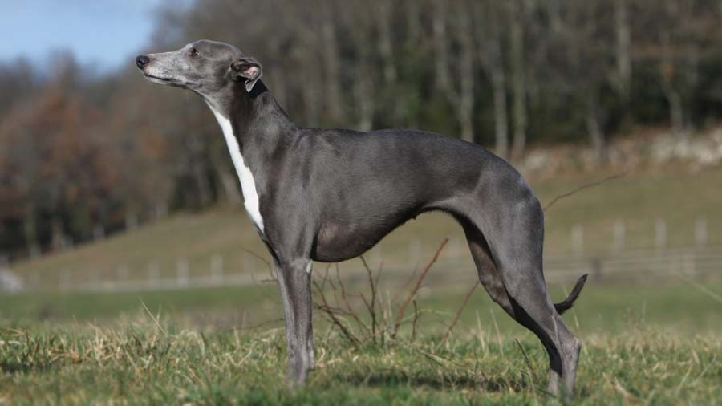
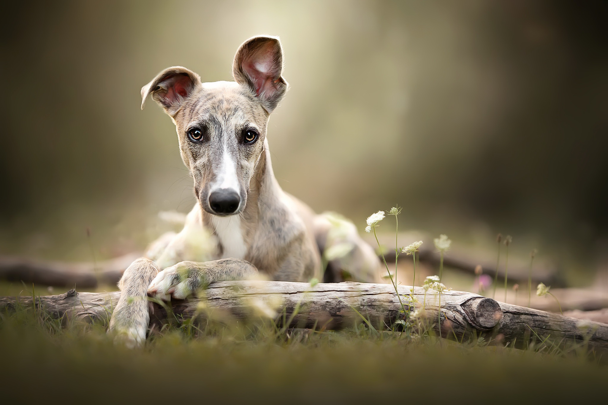
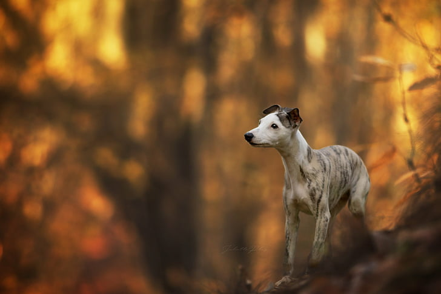

Whippet

origin
United Kingdom
size
Medium
color
Black
type
Purebred
breed group
Hound (AKC:1888), Sighthound & Pariah (UKC)
character
Hypoallergenic
temperament
Affectionate, Friendly, Gentle, Intelligent
height
19 - 22 inches (47 - 56 cm)
weight
25 - 45 pounds (11 - 21 kg)
geography
Europe
overview
The Whippet is a greyhound in miniature, the whippet is among the sleekest of dogs, with a curvaceous, streamlined silhouette, long legs and a lean physique. It is the ultimate sprinter, unsurpassed by any other breed in its ability to accelerate to top speed and to twist and turn with unequaled agility. The whippet is a lightweight version of the greyhound, with an especially supple top-line and powerful hindquarters enabling it to execute the double-suspension gallop at its most extreme. It is square or slightly longer than tall. The gait is low and free-moving. The expression is keen and alert.
history
The Whippet was developed at the end of the 19th century through crossing among the Greyhound, the Italian Greyhound, and another terrier type dog. Its name derives from the expression whip it, meaning “to move quickly.” The Whippet is an outstanding track racer over short distances, reaching speeds of up to 37 miles per hour (60 km per hour), reaching those speeds in seconds! Coursing these dogs was an entertaining form of gambling for the lower classes in England and the Whippet was nicknamed the poor man’s racehorse. The Whippet was recognized by AKC in 1888 and by the English Kennel Club in 1891. Some of the Whippet's talents include: hunting, sighting, watchdog, racing, agility and lure coursing.
Photo Gallery


